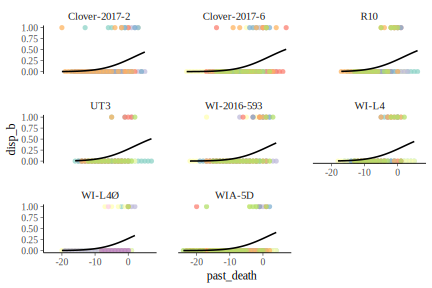
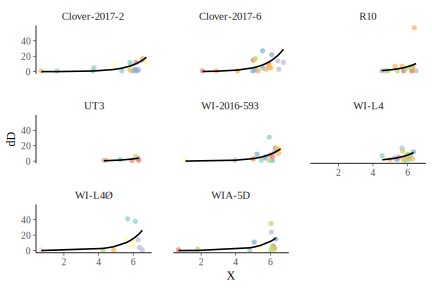
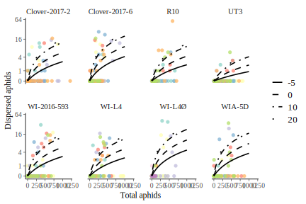
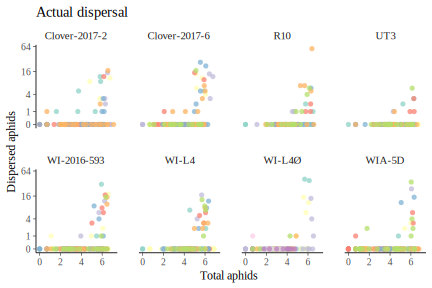
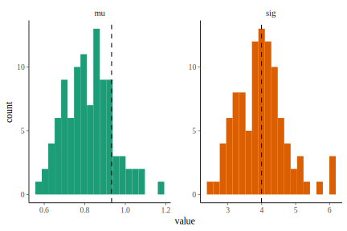

suppressPackageStartupMessages({
library(MASS)
library(clonewars)
library(lme4)
})
logit <- function(p) {
suppressWarnings({x <- log(p/(1 - p))})
# x <- ifelse(is.nan(x), NA, x)
return(x)
}
inv_logit <- function(x) {
p <- 1 / (1 + exp(-x))
p <- ifelse(is.na(p) & !is.na(x), 1, p)
return(p)
}This file contains the analyses to estimate aphid dispersal.
Load data
I don’t need to do the same filtering when loading the dataset for dispersal estimates as when loading data for population-growth parameter estimation. The only filtering I need to do is removing the first day of counts when both individuals were on the ground.
growth <- load_data(filter_pars = NULL,
remove_unfinished = FALSE) %>%
filter(date != 0) %>%
mutate(rep = factor(rep)) %>%
group_by(line, rep) %>%
arrange(date) %>%
mutate(disp = ifelse(is.na(disp), 0, disp),
N = round(impute(N)),
X = log(N),
pN = N - disp, # numbers of aphids on plant
dD = disp - lag(disp, default = 0), # number of new dispersed aphids
dD = ifelse(dD < 0, 0, dD),
past_death = date - which(N == max(N))[1], # days past plant death
disp_b = ifelse(dD == 0, 0, 1)) %>%
ungroup() %>%
arrange(line, rep, date) %>%
identity()View sample sizes
Below, n_d is the number of days where the number of dispersed individuals was greater than zero.
growth %>%
group_by(line) %>%
summarize(n = rep %>% unique() %>% length(),
n_d = sum(disp > 0)) %>%
knitr::kable()| line | n | n_d |
|---|---|---|
| Clover-2017-2 | 6 | 26 |
| Clover-2017-6 | 7 | 29 |
| R10 | 7 | 18 |
| UT3 | 7 | 8 |
| WI-2016-593 | 7 | 29 |
| WI-L4 | 7 | 27 |
| WI-L4Ø | 10 | 16 |
| WIA-5D | 7 | 20 |
Dispersal ~ N plot
Below, colors represent different reps.
growth %>%
# group_by(line, rep) %>%
# mutate(past_death = past_death / max(past_death)) %>%
# ungroup() %>%
{mutate(., pred = glm(disp_b ~ past_death + I(past_death^2), family = "binomial",
data = growth) %>% predict(type = "response"))} %>%
ggplot(aes(x = past_death)) +
geom_point(aes(y = disp_b, color = rep), shape = 16, alpha = 0.75) +
geom_line(aes(y = pred), color = "black", size = 0.75) +
facet_wrap(~ line) +
scale_color_brewer(palette = "Set3", guide = FALSE) +
NULL
growth %>%
filter(dD > 0) %>%
mutate(pred = glm.nb(dD ~ (0 + line) + offset(X),
data = filter(growth, dD > 0)) %>%
predict(type = "response")) %>%
ggplot(aes(X, dD)) +
geom_point(aes(color = rep), shape = 16, alpha = 0.75) +
geom_line(aes(y = pred), color = "black", size = 0.75) +
facet_wrap(~ line) +
scale_color_brewer(palette = "Set3", guide = FALSE) +
NULL
Fitting GLMs
Fitting a binomial GLM of <Pr(new dispersed > 0)> ~ N + N^2, and a negative binomial GLM of <# new dispersed | new dispersed > 0)> ~ line + offset(log(N)).
disp_binom <- glm(disp_b ~ past_death + I(past_death^2), family = "binomial",
data = growth)
disp_nb <- glm.nb(dD ~ (0 + line) + offset(X),
data = filter(growth, dD > 0))Theta estimate for the negative binomial regression:
Estimates for each line:
|
|
Code to make predictions from both models based on a vector of N and aphid line names:
predict_disp <- function(N, past_death, aphid_line) {
inds <- map_int(aphid_line, ~ which(disp_estimates$binom$line == .x))
# Binomial estimate (Pr(dispersal > 0)):
b0 <- disp_estimates$binom$b0[inds]
b1 <- disp_estimates$binom$b1[inds]
b2 <- disp_estimates$binom$b2[inds]
pr_disp <- inv_logit(b0 + b1 * past_death + b2 * past_death^2)
# Negative binomial estimate (# dispersed | dispersal occurs):
b0 <- disp_estimates$nb$b0[inds]
n_disp <- exp(b0) * N
return(pr_disp * n_disp)
}Plotting predictions
growth %>%
ggplot(aes(N, dD, color = rep)) +
geom_point(alpha = 0.75, shape = 16) +
geom_line(data = expand.grid(N = 1:1000,
line = growth$line %>% unique() %>% sort(),
past_death = c(-5, 0, 10, 20)) %>%
mutate(dD = predict_disp(N, past_death, line)),
size = 0.75, color = "black", aes(linetype = factor(past_death))) +
scale_color_brewer(palette = "Set3", guide = FALSE) +
scale_linetype_manual(NULL, values = c("solid", "dashed", "dotdash", "1F")) +
facet_wrap(~ line, nrow = 2) +
scale_y_continuous("Dispersed aphids", trans = "log1p",
breaks = c(0, 4^(0:3))) +
scale_x_continuous("Total aphids") +
NULL
Testing simulation
sim_disp <- function(N, past_death, aphid_line) {
inds <- map_int(aphid_line, ~ which(disp_estimates$binom$line == .x))
# Binomial estimate (Pr(dispersal > 0)):
b0 <- disp_estimates$binom$b0[inds]
b1 <- disp_estimates$binom$b1[inds]
b2 <- disp_estimates$binom$b2[inds]
pr_disp <- inv_logit(b0 + b1 * past_death + b2 * past_death^2)
# Negative binomial estimate (# dispersed | dispersal occurs):
b0 <- disp_estimates$nb$b0[inds]
n_disp <- exp(b0) * N
theta <- disp_estimates$nb$theta[inds]
# Generate random numbers:
n <- length(N)
binom_rnd <- rbinom(n, 1, pr_disp)
nb_rnd <- rnbinom(n, size = theta, mu = n_disp)
return(binom_rnd * nb_rnd)
}growth %>%
mutate(disp_ = sim_disp(N, past_death, line)) %>%
ggplot(aes(X, disp_, color = rep)) +
geom_point(alpha = 0.75, shape = 16) +
scale_color_brewer(palette = "Set3", guide = FALSE) +
facet_wrap(~ line, nrow = 2) +
ggtitle("Simulated dispersal") +
scale_y_continuous("Dispersed aphids", trans = "log1p",
breaks = c(0, 4^(0:3))) +
scale_x_continuous("Total aphids") +
NULL
# Other one to compare to:
growth %>%
ggplot(aes(X, dD, color = rep)) +
geom_point(alpha = 0.75, shape = 16) +
scale_color_brewer(palette = "Set3", guide = FALSE) +
facet_wrap(~ line, nrow = 2) +
ggtitle("Actual dispersal") +
scale_y_continuous("Dispersed aphids", trans = "log1p",
breaks = c(0, 4^(0:3))) +
scale_x_continuous("Total aphids") +
NULL
sim_accuracy <- map(1:100, ~ sim_disp(growth$N, growth$past_death, growth$line)) %>%
map_dfr(~ data_frame(mu = mean(.x), sig = sd(.x))) %>%
gather("par", "value", factor_key = TRUE)
sim_accuracy %>%
ggplot(aes(value, fill = par)) +
geom_histogram(bins = 20) +
geom_vline(data = data_frame(par = c("mu", "sig"),
value = c(mean(growth$dD), sd(growth$dD))),
aes(xintercept = value), linetype = 2) +
facet_wrap(~ par, scales = "free") +
scale_fill_brewer(palette = "Dark2", guide = FALSE)